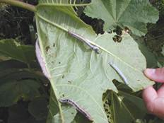
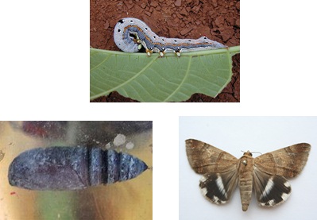

PESTS OF CASTOR :: Major Pests :: Castor Semi Looper
2. Castor semi looper: Achaea janata (Noctuidae: Lepidoptera)
Distribution and status: India, Pakistan, Sri Lanka, Thailand, Laos, Malaysia, Philippines.
Host range: Castor, rose, pomegranate, tea, citrus, mango, Cadiospermum helicacabum
Damage symptoms: The damage is caused by both the caterpillar and adult moth. The caterpillars feed voraciously on castor leaves. Feeding from the edges inwards, leave behind only the mid rib and the stalk. The damage is maximum in August, September and October. The adult of this species are fruit sucking moths and cause serious damage to citrus crop.
 |
Bionomics: Adult is a pale reddish brown moth with black hind wings having a median white spot on the outer margin. Eggs are laid on the tender leaves. Egg period is 2-5 days. Larva is a semilooper with varying shades of colour with black head and a red spot on the third abdominal segment and red tubercles in the anal region. Larval period is 11-15 days. It pupates in soil for 10-14 days. (Parallelia algira looks very similar to Achaea janata but the wings have black stripes or triangles)
 |
Management
- Dusting the infested crop with 2% parathion dust @ 20-25 kg/ha.
- Spray endosulfan 35 EC 2.0 L or carbaryl 50% WP 2 kg in 1000-1200 L water/ha.
- Conserve braconid parasitoid Microplitis ophiusae since it keeps the pest under check. (Cocoons are often seen on the ventral surface of the posterior side)